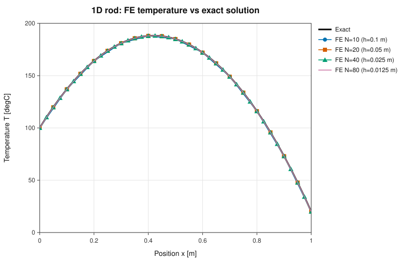
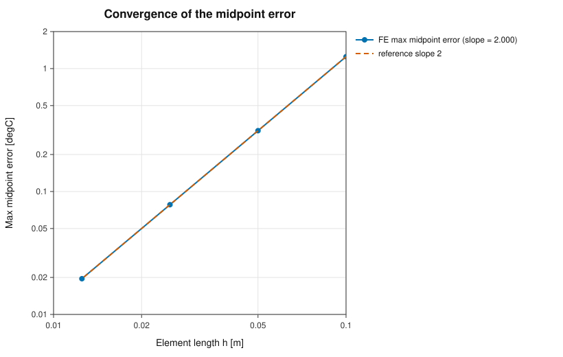
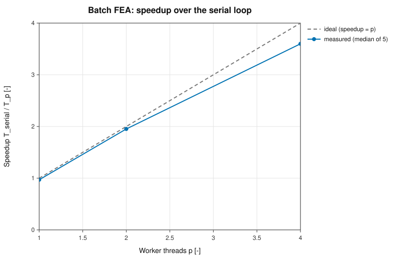
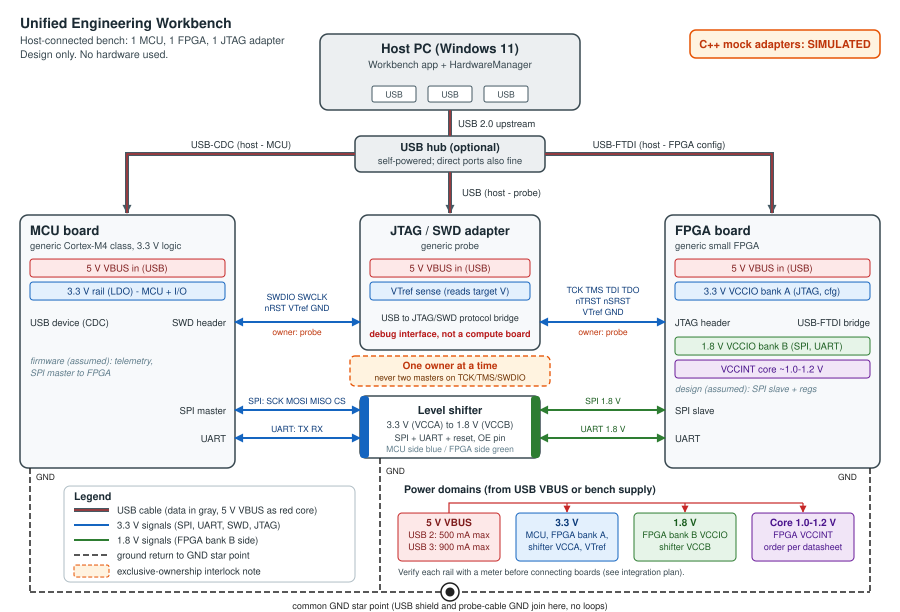
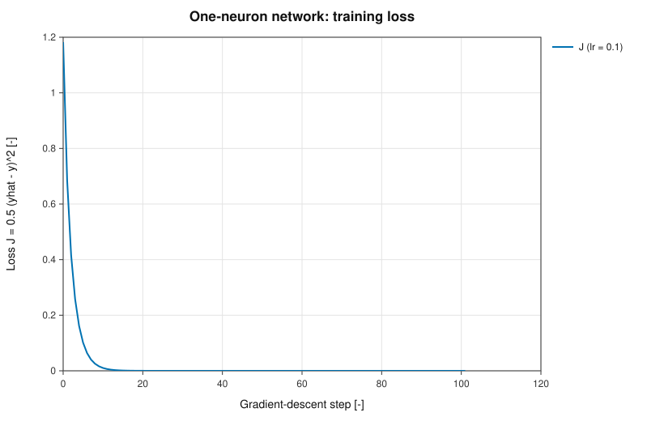

Technical report - PASS Science Works R&D Internship 2026-27, Round 1
The Workbench is one Windows program, Launch.exe, that combines five engineering tasks in a browser window: a viewer for STL geometry and nodal temperature results (B), a 1-D finite-element heat solver (C), a serial-versus-parallel benchmark (D), a simulated embedded-hardware panel with a written integration design (E), and a one-neuron backpropagation check (F). All calculations are C++17. This report covers design, method, measured results and limitations. Every number comes from the files in results/ or from the test runs described in section 7.
Layers. The program has three layers with one-way dependencies. src/core is plain C++17 (FEA, batch solver with worker pool, STL and CSV parsers, simulated devices, backprop, system info) and knows nothing about HTTP or JSON. src/server maps HTTP routes to core calls, converts results to JSON (nlohmann/json) and runs long jobs on a background thread. src/app/main.cpp is the launcher. The user interface in web/ is plain HTML and JavaScript with three.js r160 vendored, so nothing is downloaded at run time.
Browser tab (web/: HTML, JS, three.js)
| HTTP + JSON on 127.0.0.1, free port
v
src/server routes, JSON mapping, job manager (progress, cancel)
|
v
src/core fea1d, batch + worker pool, stl_ascii, ansys_csv, embedded_mock, backprop
(no HTTP, no JSON; tests/ and tools/ link it directly)
src/app/main.cpp = Launch.exe: picks the port, ShellExecuteW opens the browser,
logs/workbench.log, heartbeat watchdog, Origin/Host check
Why this shape. A local web UI gives a 3D viewer (WebGL), plots and forms without a GUI toolkit, and still ships as one executable plus static files. Keeping core free of HTTP lets the unit tests and the report tools call the same code the UI uses. The server binds to 127.0.0.1 only and rejects requests with a foreign Origin or Host header; request bodies with unknown keys get HTTP 400 so a typo cannot be ignored silently.
Long jobs. The benchmark runs on its own thread; the page polls GET /api/jobs/<id> for progress. A result is stored only when the job completes. Cancel ends in state cancelled with result: null, never a partial result. The page sends a heartbeat every 5 s; the program exits after 180 s without one (long because background tabs throttle timers), and not while a benchmark is running.
One-click delivery. Launch.exe is a static C++17 executable (MinGW-w64 GCC 13, posix threads, -O3 -DNDEBUG -static -mwindows), 2.1 MB. It imports only ADVAPI32, KERNEL32, msvcrt, SHELL32, USER32 and WS2_32, so no runtime installer is needed. The user unzips and double-clicks; no administrator rights, no internet. The executable is unsigned, so Windows SmartScreen shows "Windows protected your PC" (More info, then Run anyway); this is described in the README.
| Item | Result |
|---|---|
| Machine | Azure Standard_B2as_v2, Windows 11 Pro 10.0.26100, AMD EPYC 7763, 2 logical CPUs on 1 physical core, 8 GB RAM, standard non-admin user |
| Start | ZIP extracted into Downloads; Launch.exe started through explorer.exe, which uses the same ShellExecute path as a double-click. Edge opened the app; no console window appeared. |
| Timing | Launch-to-ready 86.5, 56.5 and 163.8 ms in three runs (the last one cold, right after a reboot); native Linux: about 1 ms |
| Exercise | An unattended script used all five tabs and ran the benchmark to completion; POST /api/shutdown then stopped the process. The procedure was run twice with the same outcome (max serial/parallel difference 0 in both); raw data and procedure: results/windows/README.md. Screenshots: docs/screenshots/windows/. |
Problem. Steady heat conduction in a uniform rod with a volumetric source, fixed end temperatures:
Default data: L = 1 m, A = 1e-4 m², k = 10 W/(m K), q = 1e4 W/m³, T0 = 100 °C, TL = 20 °C. The exact solution is T(x) = T0 + (TL − T0) x/L + q/(2k) x(L − x) = 100 − 80x + 500x(1 − x), with its maximum of about 188.2 °C at x = 0.42 m.
Method. The weak form is ∫ kA T′ v′ dx = ∫ qA v dx for test functions v with v(0) = v(L) = 0. The rod is split into N two-node linear elements of length h = L/N. With shape functions (1 − ξ) and ξ, ξ = (x − xe)/h, the element matrix and load vector are
Assembly gives a tridiagonal global matrix, stored as three diagonals. The Dirichlet nodes 0 and N are eliminated: their known values move to the right-hand side and the N−1 interior unknowns are solved with the Thomas algorithm (no pivoting needed, since the reduced matrix is symmetric positive definite). Memory and time are O(N).
Verification. Errors are measured against the exact solution at the nodes and at the element midpoints, where the FE value is the average of the two node values (the linear interpolant). For a linear element the interpolation error at the midpoint of a parabola is q h²/(8k), which is the prediction in the last column.
| N | h [m] | max nodal error [°C] | max midpoint error [°C] | q h²/(8k) [°C] |
|---|---|---|---|---|
| 10 | 0.1 | 2.8e-14 | 1.25 | 1.25 |
| 20 | 0.05 | 2.0e-13 | 0.3125 | 0.3125 |
| 40 | 0.025 | 8.8e-13 | 0.078125 | 0.078125 |
| 80 | 0.0125 | 1.2e-12 | 0.01953125 | 0.01953125 |
The least-squares slope of log(midpoint error) against log(h) is 2.000, so the solution converges at second order in h when judged between the nodes. The nodal error stays at machine precision (1e-14 to 1e-12) for every N: for this one-dimensional problem with constant coefficients the linear-element solution is exact at the nodes.


The Geometry tab loads an ASCII STL and a nodal temperature CSV (node_id,x_m,y_m,z_m,temperature_C; metres and °C). The browser sends the raw text to a C++ parser, and three.js draws the returned arrays: a mesh with optional wireframe, or a point cloud coloured by temperature with a legend and a selectable colour map. Rotate, pan, zoom and click-to-inspect a node are supported. STL carries no units, so millimetres are assumed and stated in the UI and in docs/FORMATS.md.
Validation. Both parsers are strict: a file is read completely or rejected, and every error names the 1-based line (0 means the whole file) and gives a hint, for example "Line 7: expected 5 columns (node_id,x_m,y_m,z_m,temperature_C), found 4". Rejected cases include empty or whitespace-only files, binary STL (control bytes, or size exactly 84 + 50n), a wrong keyword order, facets with other than three vertices, missing numbers or text where a number is expected, nan/inf/overflowing values, a solid with no facets, a missing endsolid (truncated file), content after endsolid; for CSV a wrong or misspelled header, header with no data rows, wrong column count, empty or non-numeric cells, negative or non-integer ids, duplicate ids and temperatures below −273.15. Accepted variations are CRLF line endings, a UTF-8 BOM, blank lines, any letter case for STL keywords and numbers like 1.5e-3 or +3. Numbers are read with std::from_chars, so the result does not depend on the locale.
| Input | Size | Parse time |
|---|---|---|
| STL, 200,000 triangles | 47 MB | 130 - 190 ms |
| CSV, 500,000 rows | 13.7 MB | 140 - 205 ms |
| STL, 800,000 triangles (near the limit) | 189 MB | about 540 ms |
| CSV, 5,000,000 rows (the row limit) | 155 MB | about 1.8 s |
Limits are 200 MB per file, 2,000,000 triangles and 5,000,000 CSV rows; larger inputs are refused before parsing. Four broken files in data/bad/ (empty CSV, wrong header, nan value, STL without endsolid) are listed in the sample menu to demonstrate the messages. The sample data are synthetic: cube.stl, heatsink.stl (12 fins, 204 triangles, closed surface checked in a test) and synthetic_plate.csv (882 nodes) are generated by tools/gen_samples.cpp; the CSV only imitates the layout of an ANSYS export and is not the output of an ANSYS run (data/PROVENANCE.md).
Workload. A batch of independent 1-D FEA solves, the problem of section 2. Each case has its own conductivity k in [1, 100] and source q in [1e3, 1e5], drawn from std::mt19937_64 with seed 42 and an explicit uniform mapping so the batch is the same on every compiler. Default size: 3000 cases of 5000 elements (1.5e7 nodes). Serial is a plain loop over the cases. Parallel is a bounded pool of p std::thread workers that take case indices from an atomic counter; result i is always written to slot i, so the output order does not depend on scheduling.
Method. One untimed warm-up, then 5 timed repetitions; the median is reported. Only the solve loop is timed (no file I/O, JSON or rendering); launch-to-ready is measured separately (section 1). Speedup is S = Tserial/Tp and efficiency is S/p. Correctness: after every parallel run the result is compared with the serial one; the largest difference over all cases, nodes and runs is 0 °C (the acceptance limit is 1e-8). Worker counts above the number of logical CPUs are capped by the server and the cap is reported.
| Linux container | Windows 11 VM | |
|---|---|---|
| CPU | Intel Xeon @ 2.10 GHz, 4 logical / 4 physical | AMD EPYC 7763, 2 logical / 1 physical (SMT siblings) |
| RAM | 15.7 GiB | 8 GB |
| OS | Linux 6.18 | Windows 11 Pro 10.0.26100 (Azure Standard_B2as_v2) |
| Compiler, flags | GCC 13.3, -O3 -DNDEBUG | MinGW-w64 GCC 13 (cross-compiled), -O3 -DNDEBUG, static |
| Machine | Run | Time [s] | Speedup | Efficiency |
|---|---|---|---|---|
| Linux, 4 cores | serial | 0.2319 | 1.00 | - |
| 1 worker | 0.2391 | 0.97 | 97% | |
| 2 workers | 0.1188 | 1.95 | 97.6% | |
| 4 workers | 0.0644 | 3.60 | 90% | |
| Windows VM, 2 vCPU (run 1 / run 2) | serial | 0.2488 / 0.2431 | 1.00 | - |
| 1 worker | 0.2503 / 0.2501 | 0.99 / 0.97 | 99% / 97% | |
| 2 workers | 0.1635 / 0.1670 | 1.52 / 1.46 | 76% / 73% |

Analysis. One pool worker is 1 to 3 percent slower than the plain loop: that is the cost of the thread and the atomic counter. Two workers on separate cores reach 97.6 percent efficiency. At four workers efficiency falls to 90 percent. The batch is memory-bound: each run writes about 120 MB of results (1.5e7 doubles), and the arithmetic per node is small, so the four cores compete for memory bandwidth. Threads are started again for every run, which is a small fixed cost. On the Windows VM the two vCPUs are hardware-thread siblings of one physical core, so they share execution units and caches; 1.46x to 1.52x (73 to 76 percent, two separate runs, results/windows/README.md) is what two SMT threads of one core typically give and does not point to a defect in the pool. Timing on shared virtual machines is also noisy.
MALLOC_TRIM_THRESHOLD_, MALLOC_TOP_PAD_; results/bench_malloc_experiment.txt). With them the serial time was 0.1948 s and the 4-worker efficiency 101.2 percent, i.e. about linear. I conclude that the excess came from heap trimming and page-fault cost in the serial path, not from a real super-linear speed-up. The table above is the default allocator, as a user would run it, and shows 3.60x. I report it as is rather than the best run.Limits. Memory bandwidth, per-run thread start-up, SMT sharing on the VM, and noise on shared CPUs. Results from one machine should not be extrapolated to others; the Performance tab reruns the measurement and prints the System card next to the numbers.
This is a design study with simulated devices: no hardware was bought, wired or tested. The full text is docs/EMBEDDED_DESIGN.md. A Windows 11 host connects over USB to one MCU board (USB-CDC virtual COM port), one FPGA board (USB-FTDI bridge) and one JTAG/SWD probe. The MCU (3.3 V) talks to the FPGA (bank B at 1.8 V) over SPI and UART through a level shifter, one channel per signal and direction. The FPGA JTAG pins sit in the 3.3 V bank A, so the debug path needs no level shifting. All grounds meet at one star point. Pin numbers and net names in the document are placeholders to be checked against real schematics.

| Link | Voltage, owner, note |
|---|---|
| SPI SCK/MOSI/nCS | MCU 3.3 V to FPGA 1.8 V via shifter; MCU is master; pull-up on the 1.8 V nCS |
| SPI MISO, UART RX/TX | FPGA 1.8 V to MCU 3.3 V via shifter; MISO high-Z when nCS is high |
| JTAG TCK/TMS/TDI/TDO | 3.3 V (bank A), no shifter; probe drives, FPGA drives TDO |
| SWDIO / SWCLK | 3.3 V; share pins with TMS / TCK |
| VTref | Target to probe, sense only; wrong or missing means do not connect |
| Rails | Each board owns its 3.3 V; boards' rails are never tied together; shifter VCCB from the FPGA 1.8 V rail; OE off until both rails are up |
| USB | 500 mA (USB 2) or 900 mA (USB 3) per port; own port or powered hub per board |
Ownership and safety. Only one master may drive TCK/TMS at a time: the probe, the FPGA board's FTDI chip and the host app are all candidates, so the app holds a software lock per target (none, probe, ftdi-config). The JTAG probe is a protocol bridge between USB and JTAG/SWD; the microcontroller inside runs only the probe firmware and takes no part in the computations, so it is not a compute board. The document ends with a ten-step bring-up plan (review schematics, inspect, ESD, power one board at a time from a current-limited supply, ground first, check shifter rails, read the IDCODE only, one owner, keep the mock behind the same interface).
Mock adapters. HardwareManager (src/core/embedded_mock) owns three simulated devices, mcu0, fpga0 and jtag0, with the states Disconnected, Connected and Fault and a capability report each. Telemetry is deterministic (a nominal value plus pseudo-noise from a stateless generator, simulated clock 0.1 s per call) and labelled SIMULATED in the UI, the API and the log. Recoverable failure: inject timeout arms a fault, the next read returns TIMEOUT (recoverable, device goes to Fault), and Reconnect clears it.
One neuron and a linear output, one training example: z = w x + b, h = tanh z, ŷ = v h + c, J = ½(ŷ − y)², with x = 1, y = 2, learning rate 0.1 and start values w = 0.5, b = 0, v = 1, c = 0. With e = ŷ − y and h′ = 1 − h² the chain rule gives ∂J/∂c = e, ∂J/∂v = e h, ∂J/∂b = e v (1 − h²) and ∂J/∂w = x times that.
| Quantity | Value |
|---|---|
| z, h = tanh z, ŷ | 0.5, 0.46211716, 0.46211716 |
| e = ŷ − y, J | −1.53788284, 1.18254182 |
| ∂J/∂w = ∂J/∂b | −1.20946448 |
| ∂J/∂v, ∂J/∂c | −0.71068205, −1.53788284 |
| Max |analytic − FD| | 1.1e-10 |
| After one update w, b, v, c | 0.62094645, 0.12094645, 1.07106820, 0.15378828 |
| J after one update | 0.68577377 |
The gradients are checked against central finite differences with ε = 1e-6; the largest difference is 1.1e-10, which is the expected size for this ε (truncation of order ε² plus round-off of order 1e-16/ε). The loss decreases monotonically over 100 further updates (to about 1e-20), and the Backprop tab reproduces these numbers. The derivation was also worked by hand: docs/appendix_handwritten.pdf (appendix, not counted in the page limit).

The 76 tests are one executable (wb_tests) run by CTest. They use a small header-only macro set (tests/wb_test.h), so no test framework has to be downloaded.
| Area | Tests | Examples |
|---|---|---|
| FEA | 9 | exact nodal values, midpoint error equal to qh²/(8k), slope 2, invalid parameters |
| Batch and benchmark | 11 | deterministic generator, parallel equals serial, cancel returns nothing, progress is monotone, bad inputs throw |
| Backprop | 6 | forward values, gradients against finite differences, one update, monotone loss |
| Parsers | 19 | sample files, CRLF/BOM/odd spacing, every rejection class with its line number, 200k-triangle and 500k-row files, size limits |
| Embedded mock | 12 | states, unknown device, double connect, timeout and recovery, deterministic telemetry, concurrent access |
| Server and job manager | 19 | routes, CSV export, 422 with line number on a bad upload, sample whitelist, busy/cancel/atomic result, shutdown cancels a job |
Negative tests are a large part of the suite: malformed and oversized files, out-of-range or unknown request fields, a second benchmark while one is running, cancel while running, a hardware timeout followed by reconnect. Sanitizers. During development the suite ran clean under AddressSanitizer with UBSan, and separately under ThreadSanitizer (the worker pool, job manager and hardware manager are the concurrent parts). Windows. The VM run of section 1 exercises the cross-compiled executable end to end, which unit tests on Linux cannot show.
AI tools were used during this project; what they were used for, and how I checked the results, is disclosed in docs/AI_USE_LOG.md. The ownership statement is docs/OWNERSHIP.md. Both files are in the ZIP. Third-party code is limited to the vendored MIT-licensed libraries listed in third_party/VERSIONS.md (cpp-httplib, nlohmann/json, three.js). Effort per task is in the README.